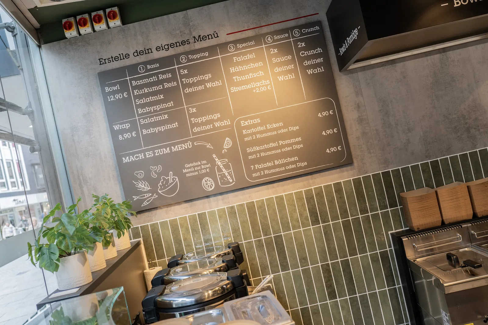
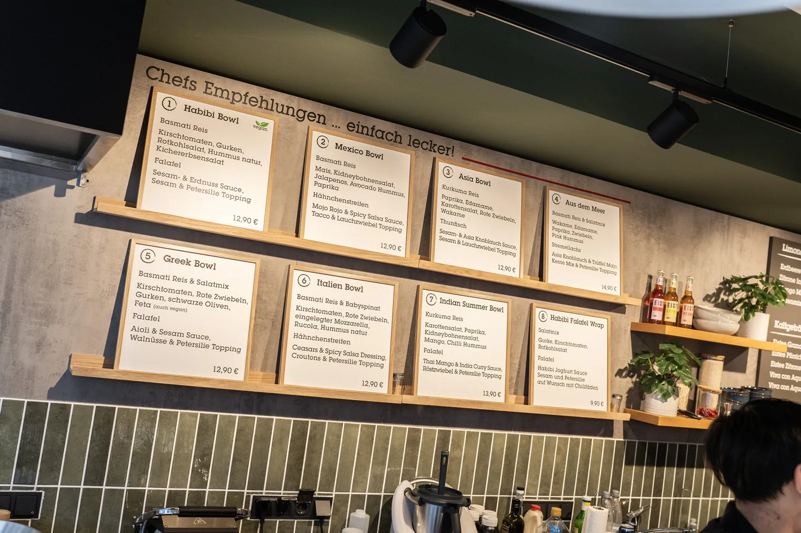

Erstelle dein eigenes Menü
- Los geht’sAn der Tafel steht, wie es geht.Fünf Entscheidungen, mehr nicht. Scroll weiter.
- Schritt 1 · BasisWorauf baust du?Basmati Reis, Kurkuma Reis, Salatmix oder Babyspinat. Im Wrap: Salatmix oder Babyspinat.
- Schritt 2 · ToppingFünf Toppings deiner Wahl.Gurke, Paprika, Mais, Rotkohl, Edamame und vieles mehr. Du zeigst drauf, wir füllen ein. Im Wrap sind es drei.
- Schritt 3 · SpecialDas Herzstück.Falafel, Hähnchen, Thunfisch oder Stremellachs.
- Schritt 4 · SauceZwei Saucen deiner Wahl.Von Sesam über Aioli bis Spicy Salsa.
- Schritt 5 · CrunchZweimal Crunch obendrauf.Zum Beispiel Sesam, Röstzwiebeln, Walnüsse, Croûtons oder Petersilie.
- FertigGuten Appetit.Keine Lust auf Entscheiden? Dann nimm eine von Chefs Empfehlungen.Zu Chefs Empfehlungen →